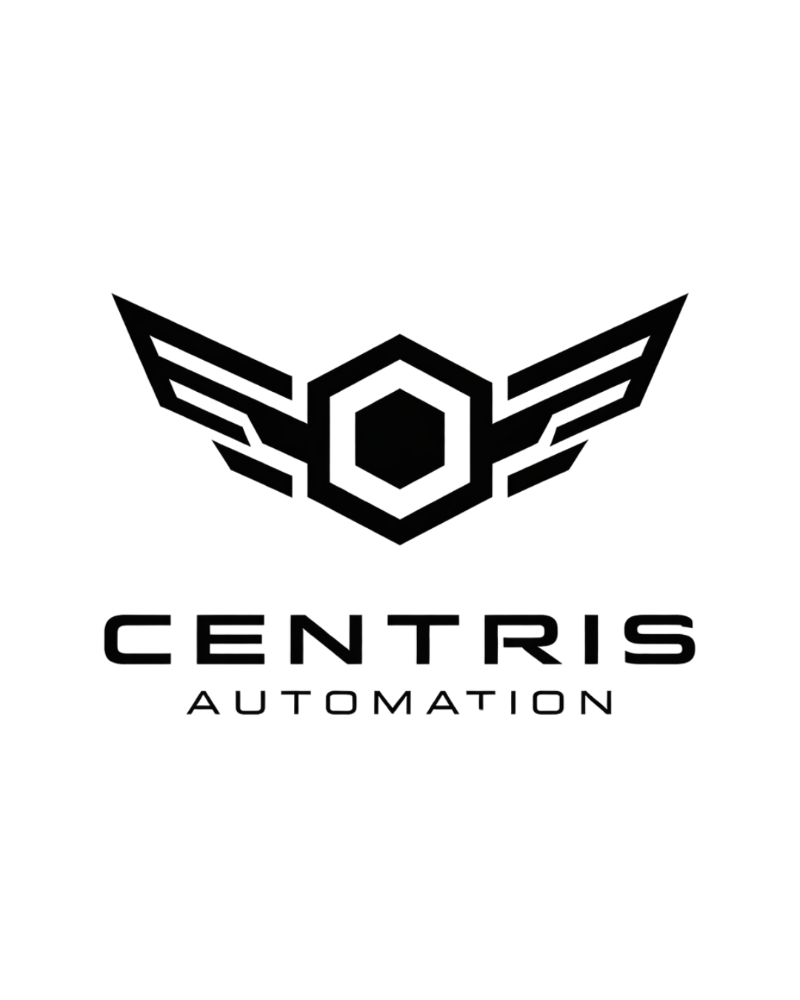

Pipeline comercial B2B, ponta a pontaO Prospect da Centris Automation encontra leads, faz o primeiro contato, executa follow-ups, classifica respostas com IA e entrega reuniões qualificadas direto na sua agenda.
O mercado paga muito mais por reuniões qualificadas do que por listas de leads. Por isso construímos uma plataforma — não só um buscador.
Você recebe nome, telefone e e-mail — e o trabalho de prospecção começa do zero.
A Centris executa cada etapa por você. Você só entra para fechar.
Cada etapa funciona sozinha. Combinadas, viram uma máquina de pipeline.
Empresa, CNPJ e contato por nicho e região.
Mensagem inicial disparada automaticamente.
Cadência automática até obter resposta.
Interesse, follow-up ou negativo, em segundos.
Lead quente cai direto na sua agenda.
Do Starter (encontrar leads) ao Enterprise (reuniões agendadas pela IA). Você sobe de plano conforme cresce.
Faixas de investimento orientativas. O valor final é definido conforme volume, nicho e nível de personalização.
O Prospect cresce com o seu negócio. Comece simples, escale até o SDR virtual.
"Substituímos horas de prospecção manual por uma esteira que entrega conversas reais. Hoje meu time só entra na hora da reunião."— Cliente Centris Automation
Digite abaixo o nicho e região que quer procurar e veja com seus próprios olhos o funcionamento do sistema.
Fale com a Centris no WhatsApp e descubra qual plano do Prospect faz mais sentido para o seu nicho.
Falar com um especialista